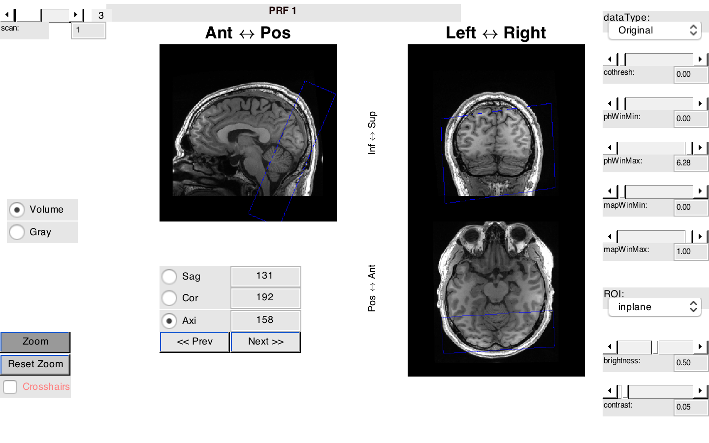

t_alignInplaneToVolume
Illustrates how to align the inplane volume from an fMRI session to the 3D volume anatomy using sample data set erniePRF
Dependencies: Remote Data Toolbox
This tutorial is part of a sequence. Run t_initAnatomyFromFreesurfer t_initVistaSession prior to running this tutorial.
Summary
- Specify alignment matrix linking inplane anatomy to volume anatomy - Save mrSESSION with alignment matrix
Tested 07/21/2016 - MATLAB r2015a, Mac OS 10.11.6
See also: t_initAnatomyFromFreesurfer t_initVistaSession
Winawer lab (NYU)
Contents
Download ernie raw MRI data
% Remember where we are
curdir = pwd();
Organize functional data
% Create a new directory in 'scratch' for the tutorial erniePathTemp = fullfile(vistaRootPath, 'local', 'scratch', 'erniePRF'); % Navigate and create a directory cd(erniePathTemp)
Align inplane to t1 and install Gray/white segmentation
% NOTE: THIS IS A PLACE HOLDER. WE WILL REPLACE THIS WITH CODE THAT SHOWS % HOW THE ALIGNMENT IS COMPUTED. FOR NOW WE JUST PROVIDE THE ALIGNMENT % MATRIX. % navigate and open vistasession erniePathTemp = fullfile(vistaRootPath, 'local', 'scratch', 'erniePRF'); cd(erniePathTemp) vw = initHiddenInplane(); % to use the GUI: vw = mrVista; % aligment matrix (obtained in separate script) alignMtrx = ... 1.0e+02 * ... [... -0.009184260815436 -0.000512038859394 0.007845296072164 2.490305591031722 0.003943260519177 -0.000392116999562 0.018362671991761 1.307013835970514 -0.000316306420987 0.009979180755162 0.001124081482535 0.526943057809918 0 0 0 0.010000000000000]; mrSESSION = sessionSet(mrSESSION, 'alignment', alignMtrx); saveSession();
[niftiCheckQto] NIFTI header origin is at or outside the image volume. [niftiCheckQto] Origin to the image center [80.000,104.000,12.000] pix.
Visualize
% open a 3D volume view vol = open3ViewWindow('volume'); % Define an ROI that is the entire functional slab vw = newROI(vw, 'inplane', true); dataSize = viewGet(vw, 'anat size'); [x, y, z] = ind2sub(dataSize, 1:prod(dataSize)); vw = viewSet(vw, 'ROI coords', [x; y; z]); % Project this ROI to the volume so that we can see the slice selection % within the volume vol = ip2volCurROI(vw ,vol); vol = refreshScreen(vol, 0);
Initializing Volume view freq_dim not set correctly in NIFTI header. phase_dim not set correctly in NIFTI header. [mrLoad]: mr.voxelSize has length<4: concatenating a "1" to it [mrLoad]: mr.dims has length<4: concatenating a "1" to it freq_dim not set correctly in NIFTI header. phase_dim not set correctly in NIFTI header. Attaching menus Attaching buttons Attaching popup menus Attaching sliders Done initializing Volume view Could not find /Users/jonathanwinawer/matlab/git/vistasoft/local/scratch/erniePRF/Volume/userPrefs.mat freq_dim not set correctly in NIFTI header. phase_dim not set correctly in NIFTI header. [mrLoad]: mr.voxelSize has length<4: concatenating a "1" to it [mrLoad]: mr.dims has length<4: concatenating a "1" to it
Clean up
mrvCleanWorkspace cd(curdir)